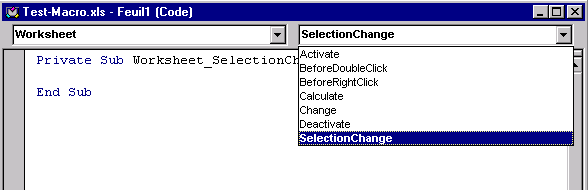

Chapitre 9 - Les évènements
Un événement est une action reconnue par un objet. La reconnaissance d’un événement par un objet permet de déclencher l’exécution d’une procédure lorsque cet événement survient. Un clic souris ou la frappe d’une touche au clavier sont des exemples d’événements qui peuvent être interprétés par du code VBA.
Pour qu’un objet réponde à un événement, il faut écrire du code VBA dans la procédure associée à l’événement considéré. Ces procédures sont stockées dans les modules de codes associés aux objets concernés.
Nous verrons plus loin que les contrôles placés dans une boîte de dialogue (boutons de commande, zones de texte, ...) peuvent répondre à des événements. Les classeurs et les feuilles de calcul peuvent également répondre à des événements. Pour qu’un objet réponde à un événement, il faut écrire du code VBA dans la procédure associée à l’événement considéré.
Exercice guidé
L'image parlant mieux que les mots, un exercice guidé illustrera ce chapitre. Suivez le pas à pas pour ne rien oublier.
Il s'agit d'écrire une procédure qui détecte chaque nouvelle plage de cellules ou cellule sélectionnée par l’utilisateur dans la feuille de calcul FEUIL1 du classeur nommé ici pour l’exemple TEST-MACRO.XLS et colorie son fond en bleu.
Avant d’écrire cette procédure, il faut :
identifier l’objet dont on veut traiter l’événement. Dans notre cas, il s’agit de la feuille de calcul FEUIL1 qui est un objet Worksheet ;
puis identifier l’événement à traiter dans la liste des événements associés à l’objet considéré. Dans notre cas, on s’intéresse à chaque nouvelle sélection d’une plage de cellules ou cellule dans la feuille de calcul, ce qui correspond à l’événement SelectionChange ;
enfin, écrire le code VBA approprié dans la procédure associée à l’événement choisi.
Pour cela, nous allons :
1) Ouvrir le classeur TEST-MACRO.XLS, puis l’éditeur de Visual Basic ;
2) Dans l’explorateur de projets, sélectionner la feuille de calcul FEUIL1 et ouvrir son module de code à l’aide du clic droit de la souris et de l’option CODE.
3) Dans la liste de gauche au sommet du module de code, sélectionner l’option WORKSHEET. Dans la liste de droite au sommet du module de code, sélectionner l’événement SelectionChange.

On voit alors apparaître dans le module de code l’en-tête de procédure suivant :
Private Sub Worksheet_SelectionChange(ByVal Target As Range)
On veut à présent écrire les instructions VBA permettant de colorier le fond d’une cellule ou d’une plage de cellules en bleue. Pour trouver ces instructions, il existe deux possibilités :
utiliser l’enregistreur de macro ;
explorer les propriétés de l’objet Range pour trouver comment modifier sa couleur de fond.
4) Aller dans EXCEL et enregistrer une nouvelle macro MacroCouleurFond qui permet de modifier la couleur de fond d’une cellule.
5) Retourner dans l’éditeur de Visual Basic et étudier le code de la macro MacroCouleurFond.
L’instruction Selection.Interior.ColorIndex = 41 semble intéressante puisqu’elle parle de couleur. Pour obtenir de l’aide sur cette instruction, sélectionner dans le code la propriété ColorIndex et appuyer sur la touche F1. L’aide en ligne de l’éditeur de Visual Basic permet d’obtenir les informations suivantes :
La propriété Interior d’un objet Range renvoie un objet Interior qui correspond à la couleur de fond d’une plage de cellules.
La propriété ColorIndex d’un objet Interior permet de déterminer la couleur de fond.
6) Retourner dans le module de code associé à la feuille de calcul FEUIL1 et compléter la procédure Worksheet_SelectionChange comme suit :
Private Sub Worksheet_SelectionChange(ByVal Target As Range)
Target.Interior.ColorIndex = 41
End Sub
La variable Target qui est un objet Range représente la plage de cellules ou la cellule sélectionnée par l’utilisateur dans la feuille de calcul FEUIL1.
7) Enregistrer la procédure et retourner dans EXCEL pour la tester. Pour cela, sélectionner une plage de cellules ou cellule et vérifier que sa couleur de fond devient bleue.